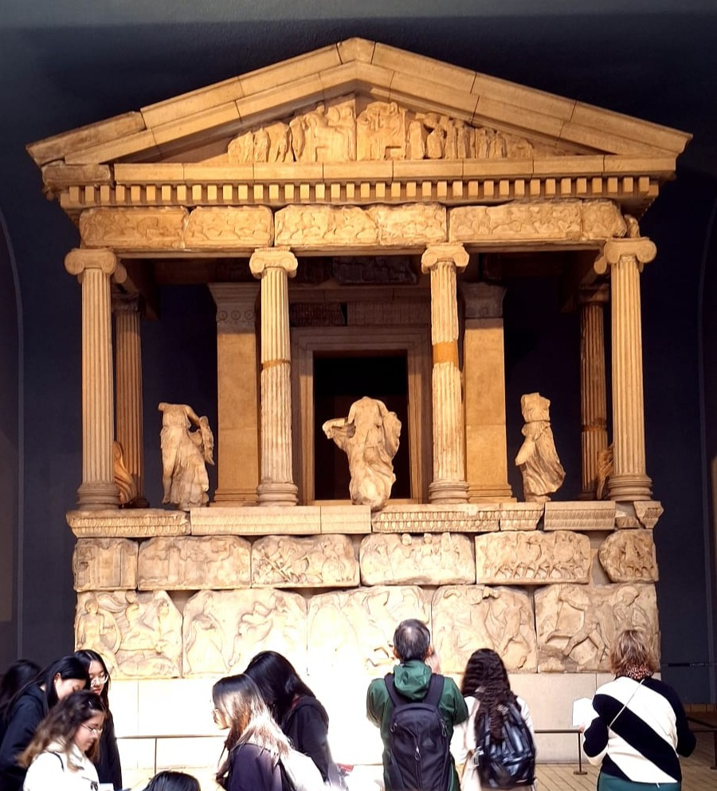
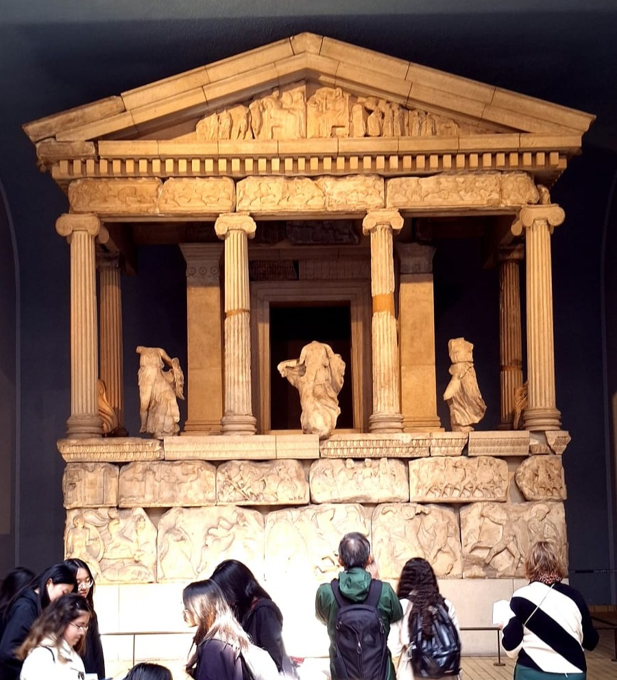

La Matinée
Après une premiere nuit dans les familles d'accueil, nous nous sommes rejoints pour la journée. Nous avons pris le car pour nous rendre en ville et commencer les visites.
.jpg) 

.jpg)

Après cette visite nous sommes allés manger dans un petit parc très fleurie :


L'après midi
L'après midi, nous avons visité la National Gallery, et nous nous sommes baladés dans le quartier après.
Enfin, nous avons retrouvé José, qui nous a conduit jusqu'au point de rendez-vous pour retrouver les familles d'accueil. Puis nous avons passé la soirée avec elles.
British Museum
Nous sommes allés au British Museum, qui présente l'histoire et la culture des civilisations humaine, avec notamment des momies et des objets antiques. Nous avons pue entre autres voir la bibliotheque, le monument des Néréides , l'impressionnante Queen Elizabeth II Great Court et la collection de momies du musée.
Bibliotheque du British Museum
Nous avons pue voir l'impressionnante salle de lecture du British Museum(en), qui compte 25 000 livres axés sur les cultures représentées dans le musée.
.jpg)
Monument des Néréides
Le monument des Néréidesest un monument funéraire de la ville antique de Xanthe, en Lycie.

Queen Elizabeth II Great Court
La Queen Elisabeth II Great Court au British Museum est une grande cour intérieure au centre du musée. En son centre elle abrite la bibliotheque. Elle est entourée de plusieurs salles d'exposition et possède un immense toit en verre.

La collection de Momies
Nous avons pue observer à l'étage l'impressionnante collection de momies du British Museum provenant d'Egypte et du Soudan. Avec elle vient plus de 100 000 pièces antiques, ce qui en fait la collection la plus complète du monde.
The Victoria Embankment Gardens
The National Gallery
La National Gallery est un musée d'art à Londres, situé sur la place de Trafalgar. Il abrite une collection de plus de 2 300 peintures, allant du XIIIe au debut du XXe siècle.